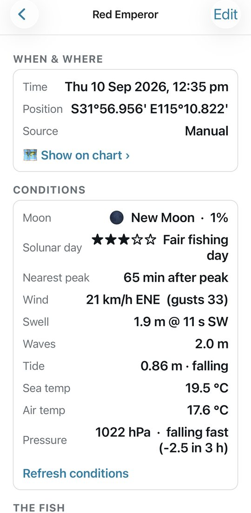
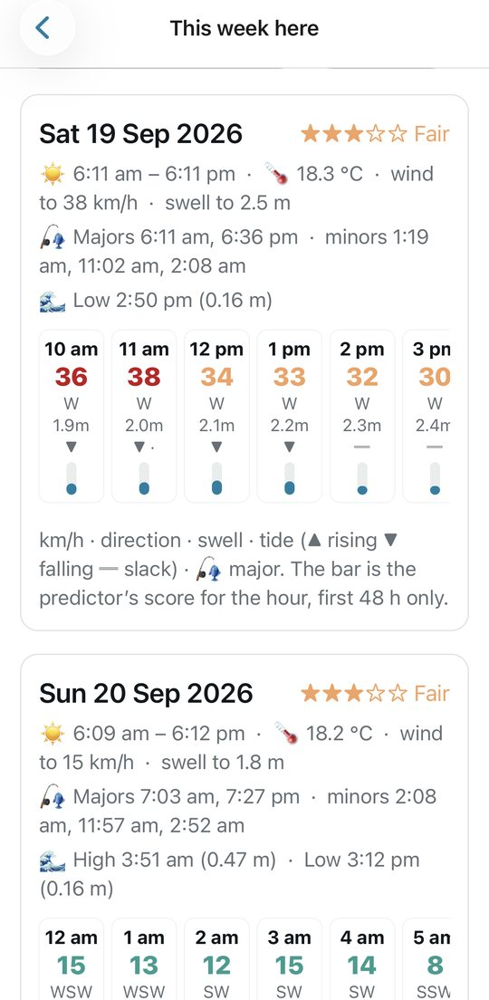
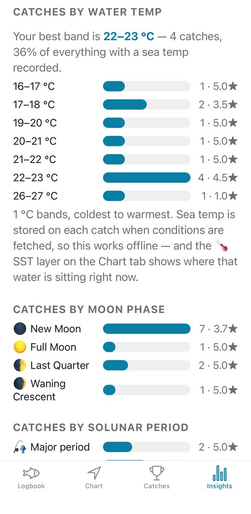
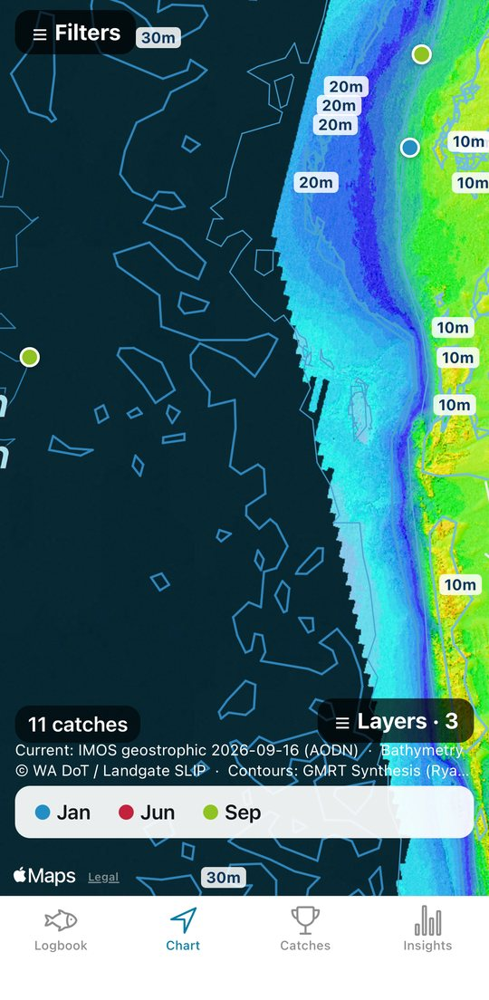
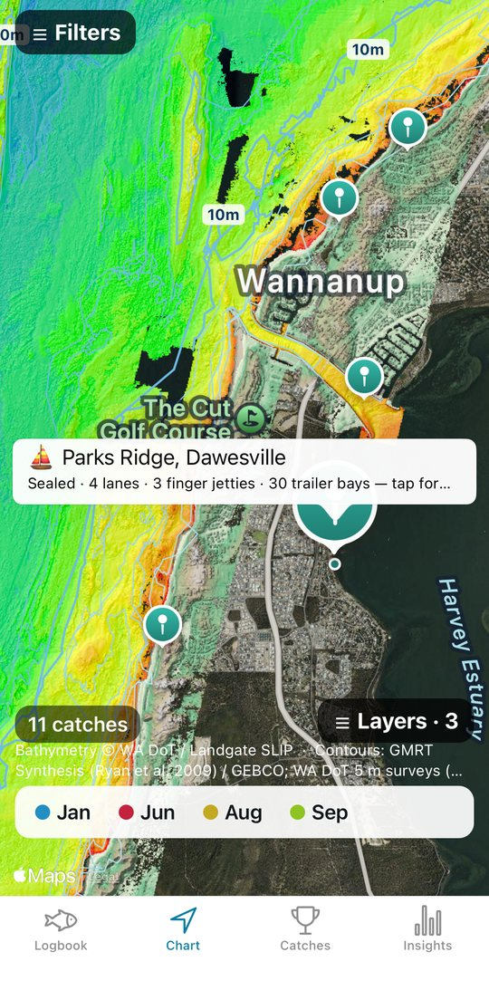
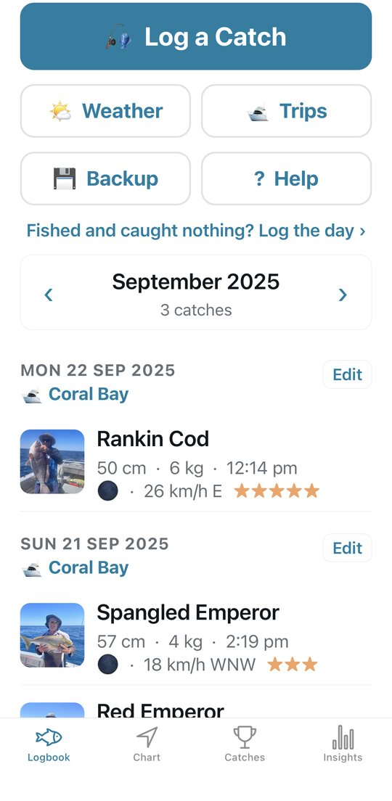

What it does
Every catch records its own conditions
Save a fish and the app files the conditions it was caught in: tide state and height, wind and gusts, swell and period, moon phase and solunar window, pressure and its trend, sea and air temperature. Over a season that becomes the answer to which tide, moon and wind actually catch fish.
The week ahead, with bite times
Seven days of wind, swell, tides and sea temperature for any of your marks or where you're standing, with the solunar major and minor bite periods for each day, a score for the next 48 hours built from your own catches, and the Bureau's coastal waters forecast.
What actually caught fish
Catches by tide, moon, solunar period, wind, swell, pressure trend and water temperature; your best marks and depths for this time of year; a PDF season report.
Tide from the tables, not a model
The tide on every catch comes from the Bureau's 2026 predictions for the nearest port — every WA and Queensland port, and every other state's standard ports. Slack, run, height, and the next turn.
Seabed contours and every WA boat ramp
Depth contours from Perth to Broome and out around the islands, plus the Sunshine Coast. All 190-odd Department of Transport ramps, with lanes, jetties, trailer bays and the tide there now.
Marks the way your plotter shows them
Positions read and type as S32°35.922' E115°37.681' — the same boxes as your Garmin. Import a GPX of your marks and the app names the spot for you when you are on it.
Your spots stay on your phone
There is no account, no feed, no analytics and no server of ours. Catches, photos, positions and notes live on the phone. The only thing that ever leaves it is a position rounded to the nearest kilometre, sent to a weather service to fetch the conditions — so an exact mark never leaves the phone, and mark names, notes and photos never do either. The privacy policy says exactly what is sent and to whom.
Have a look






Where the data comes from
Tide predictions © Commonwealth of Australia, Bureau of Meteorology (WA tables supplied by the Department of Transport and Major Infrastructure; Queensland tables by Maritime Safety Queensland, CC BY 4.0). This product is based on Bureau of Meteorology information that has subsequently been modified; the Bureau does not necessarily support or endorse, or have any connection with, the product.
Weather and marine conditions: Open-Meteo (CC BY 4.0). Coastal waters forecasts: Bureau of Meteorology. Sea surface temperature: NASA Worldview / GIBS. Currents: IMOS OceanCurrent via the AODN (IMOS is enabled by NCRIS), CC BY 4.0.
Seabed imagery: WA Department of Transport bathymetry via Landgate SLIP. Depth contours: GMRT Synthesis / GEBCO. Boat ramps: WA Department of Transport, Public Boat Ramps (DOT-033) via Landgate SLIP, CC BY. Ocean base map: Esri, GEBCO, NOAA, Garmin and others. Map data: Apple Maps.
None of the chart layers are for navigation. Fishing rules are transcribed from each state department's published tables and go out of date — check the department before you keep a fish you are unsure of.